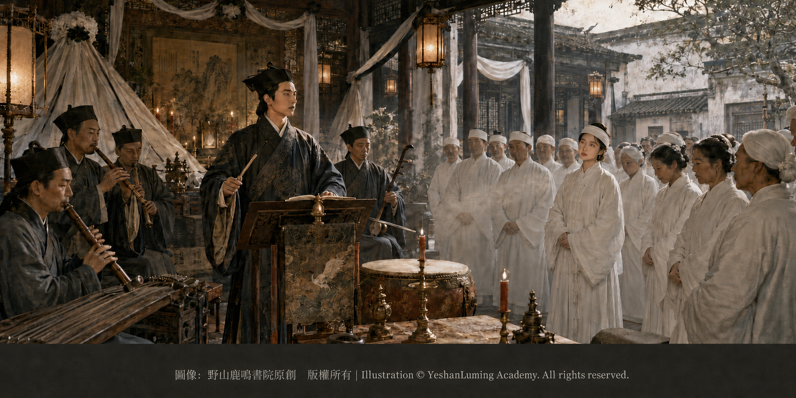

華彥鈞悲劇降生·不合傳統禮教出生的「野種」Hua Yanjun’s Tragic Birth · The “Bastard” Born Outside the Bounds of Traditional Morality
China’s Beethoven · Blind Musician AbingHua Yanjun’s Tragic Birth · The “Bastard” Born Outside the Bounds of Traditional Morality
China’s Beethoven · Blind Musician Abing華彥鈞悲劇降生·不合傳統禮教出生的「野種」
中國的貝多芬·瞎子阿炳
中國的貝多芬·瞎子阿炳（101）China’s Beethoven · Blind Musician Abing (101)
清光緒十九年，公元一八九三年八月十七日，一個男孩出生了。他就是後來鼎鼎大名的中國民間音樂大師——瞎子阿炳。從娘胎中墜地的那一刻起，他就背上了終身無法洗刷的原罪：一個不合傳統禮教出生的「野種」。
阿炳的生母名叫吳阿芬，原本是無錫城內名門望族秦家的二少奶奶。秦家大少爺因肺病去世，秦家二少爺可能也受到傳染，患有同樣嚴重的肺癆。
光緒十八年，在遍求良醫無效後，為了避免絕後，秦家遵循古老傳統，將少女吳阿芬娶進門，為二少爺「衝喜」，企圖創造神蹟。
遺憾的是，衝喜沒有效果。結婚僅僅半年，二少爺就病發吐血身亡。年紀輕輕的吳阿芬，就這樣變成了一個可憐的小寡婦。
在那個時代，人們遵從的禮教規矩是「女人餓死事小，失節事大」。因此，一個年輕寡婦想要改嫁是極其艱難的，尤其是像秦家這樣有頭有臉的大戶人家。
所以可以想像，吳阿芬的後半生，就要為了秦家的名譽守活寡。那有多麼可怕，絕非常人可以想像。
根據流傳於無錫民間的一種說法，事情的經過大致如下。
清光緒十九年，公元一八九三年八月十七日，一個男孩出生了。他就是後來鼎鼎大名的中國民間音樂大師——瞎子阿炳。從娘胎中墜地的那一刻起，他就背上了終身無法洗刷的原罪：一個不合傳統禮教出生的「野種」。
阿炳的生母名叫吳阿芬，原本是無錫城內名門望族秦家的二少奶奶。秦家大少爺因肺病去世，秦家二少爺可能也受到傳染，患有同樣嚴重的肺癆。
光緒十八年，在遍求良醫無效後，為了避免絕後，秦家遵循古老傳統，將少女吳阿芬娶進門，為二少爺「衝喜」，企圖創造神蹟。
遺憾的是，衝喜沒有效果。結婚僅僅半年，二少爺就病發吐血身亡。年紀輕輕的吳阿芬，就這樣變成了一個可憐的小寡婦。
在那個時代，人們遵從的禮教規矩是「女人餓死事小，失節事大」。因此，一個年輕寡婦想要改嫁是極其艱難的，尤其是像秦家這樣有頭有臉的大戶人家。
所以可以想像，吳阿芬的後半生，就要為了秦家的名譽守活寡。那有多麼可怕，絕非常人可以想像。
根據流傳於無錫民間的一種說法，事情的經過大致如下。
秦家二少爺過世後，理所當然要辦法事、超度亡魂，所以秦家請來無錫雷尊殿的當家道士華清和，到大宅主持誦經超度儀式。
華清和是無錫洞虛宮道觀偏殿雷尊殿的「當家道士」，精於道教文化，是一位音樂全才，會演奏多種民間樂器，在無錫當地享有盛名。
華清和年紀輕輕，就已經精於道教文化，不僅精通道教音律，而且具有超凡的中國傳統音樂技藝。他的外表也十分引人注目，身材高大挺拔，面容姣好。他做法事時，在台上又說又唱，指揮一眾道士表演音樂、舞蹈、作法，如玉樹臨風，恰似當今人們追捧的超級巨星登台表演，非常吸引觀眾的眼球，特別是懷春少女，以及富有而寂寞的大戶人家女人。
做法事時，華清和的精彩表演深深吸引了處在極度悲痛與孤獨中的吳阿芬，使她對華清和留下了極深、極好的印象。
對於華清和來說，吳阿芬這個美麗而可憐的少女寡婦，悲傷中那淒淒可憐的神情，就是一種超級美。那種美，讓人憐、讓人愛、讓人心痛、讓人醉。
當時華清和還是單身，沒有娶親。他對吳阿芬一見鍾情，強烈地愛上了這個命苦、年紀輕輕就失去丈夫的小寡婦。在連續幾天做法事時，他有很多機會和她接觸，真心地對她噓寒問暖，關懷備至。
華清和不是乘人之危，也不是壞人。他是真的被這個美麗、善良，卻慘遭不幸的年輕少女寡婦迷住了。他對她的感情是認真的。
從那次法事以後，他們兩人之間就開始有了交往。失去丈夫的吳阿芬，從華清和的關心、愛護中感受到真情，也慢慢從失去丈夫的悲傷中走出來，開始對華清和產生了真感情。
這樣一來二去，他們很快墜入愛河，偷吃禁果，吳阿芬懷上了華彥鈞。這其中的具體情況，已經成為一個永遠的歷史謎案，後人無法得知其中細節。

Click to enlarge
平心而論，華清和是一位正一派的火居道士，理論上可以結婚。而華彥鈞的母親吳阿芬，在失去丈夫後再嫁人，也是理所當然。
問題是，迫於當時的禮教與世俗壓力，他們之間的交往只能秘密進行。一個年輕漂亮的寡婦，忽然肚子大了，是一定會被人指著脊梁骨罵的。
不要說在民風保守、思想不開化的滿清末年，這件事即使發生在今天，也會成為一樁引起轟動的花邊醜聞。
對於年輕寡婦吳阿芬突然懷孕，秦家感到震驚。為了避免尷尬，堵住外界的流言蜚語，秦家對外宣稱吳阿芬懷的是秦家二少爺的遺腹子。而且，對於面臨絕後的秦家來說，他們也真心盼望這就是秦家的骨血。
華彥鈞出生一年後，真相敗露。因為小阿炳的長相看不出秦家二少爺的哪怕一點影子，卻完全是道士華清和的一個小小翻版。
秦家深感震怒，把吳阿芬逐出家門。華清和為她在外面秘密租下房屋居住。
但是，後來秦家不甘心受此奇恥大辱，又把吳阿芬強行接回大宅關押。在家族的嚴厲譴責、世人的惡言中傷，以及母子生離死別的各種精神打擊下，吳阿芬無處可逃。在阿炳僅僅四歲那年，她忍受不了巨大的偏見與歧視，無奈之下跳井自盡，結束了自己坎坷的一生。
這當然是秦家的一家之言。吳阿芬的真實死因究竟如何，無人知道，已經成為一個永久的謎。
按照常理，吳阿芬年紀輕輕就變成寡婦，她有權再次選擇自己真正的愛情，而不是被當成救人衝喜的工具。可是，在那個年代，就是沒有常理可講。
在當時的封建道德與宗族勢力下，秦家絕對不可能允許自家的二少奶奶正式改嫁給一個道士，即使華清和是一位有身份、有地位的道士。這不只是面子問題，在當時更會被視為「敗壞人倫、玷污祖宗」的奇恥大辱。
而阿炳的父親華清和，屬於道教的「正一道」，俗稱火居道士。正一道在當時允許道士娶妻生子，但這一般僅限於普通的底層道士。
對道教高層來說，情況就完全不同。華清和不是普通的道士，他是無錫核心道觀洞虛宮雷尊殿的當家主持。作為一殿之主，他享有極高的社會地位和豐厚的香火、田產收入。
而保持道德標準，是他能夠維持當家主持地位的基本條件。「私通寡婦」肯定會成為道門的一大醜聞。在當時的社會風氣下，一個道觀的主持，如果公開承認他與當地大戶人家的守寡少奶奶相愛，甚至要明媒正娶她為妻，就會在無錫城裡掀起驚天巨浪。
這意味著華清和會立刻身敗名裂，被道門、宗教界以及無錫的地方鄉紳徹底唾棄。雷尊殿的當家之位和所有財產，也會被其他派系瞬間奪走。
因此，無論是吳阿芬，還是華清和，雖然真的相愛，甚至已經有了愛情的結晶——小小的華彥鈞，雙方都不敢再越雷池一步，走向真正的婚姻。
正是在雙方的懦弱，以及對世俗傳統禮教的妥協之下，最終釀成了兩代人的悲劇。
面對世俗傳統禮教這座大山，他們無力抗拒。華清和與吳阿芬都選擇了隱瞞與退縮，而代價則由阿炳的生母吳阿芬和年幼的阿炳承擔。
小小的華彥鈞，每次出門都被人指指點點，受到羞辱，甚至被人當面罵作「小野種」。這就是他從出生那一刻起，便背負在身上的原罪。
華彥鈞當時年紀太小，還不全然明白這究竟是怎麼回事，也不懂世事的險惡。但是，從人們充滿惡意的眼神中，他也明白了那不是什麼好事。
因此，他小小的心靈很早就蒙上了巨大的陰影，而這道陰影，最終影響了他的一生。
（未完待續）
On August 17, 1893, the nineteenth year of the Guangxu Emperor’s reign, a boy was born. He would one day become the renowned master of Chinese folk music known as Blind Abing. Yet from the moment he fell from his mother’s womb into this world, he carried an original sin that could never be washed away: he was a “bastard,” born outside the bounds of traditional morality.
Abing’s biological mother was named Wu Afen. She had originally been the wife of the Qin family’s second young master, one of the most prominent and respected families in the city of Wuxi. The Qin family’s eldest son had died of tuberculosis, and the second son, possibly infected as well, was suffering from the same grave illness.
In the eighteenth year of the Guangxu Emperor’s reign, after every effort to find an effective doctor had failed, the Qin family resorted to an ancient custom in the hope of preventing the family line from dying out. They brought the young Wu Afen into the household as a bride for the second son, believing that the auspicious marriage might drive away his illness and bring about a miracle.
Regrettably, the marriage brought no miracle. Only six months after the wedding, the second young master suffered a violent relapse, coughed up blood, and died. Wu Afen, still so young, was left a pitiful little widow.
In that age, society lived by a cruel moral precept: “For a woman, starvation is a minor matter; the loss of chastity is a grave one.” It was therefore extraordinarily difficult for a young widow to remarry—especially one belonging to a wealthy and prestigious family such as the Qins.
It is not difficult to imagine what awaited Wu Afen. For the sake of the Qin family’s honor, she was expected to remain a living widow for the rest of her life. The horror of such an existence is almost beyond ordinary imagination.
According to one account passed down among the people of Wuxi, what followed unfolded roughly as described below.
On August 17, 1893, the nineteenth year of the Guangxu Emperor’s reign, a boy was born. He would one day become the renowned master of Chinese folk music known as Blind Abing. Yet from the moment he fell from his mother’s womb into this world, he carried an original sin that could never be washed away: he was a “bastard,” born outside the bounds of traditional morality.
Abing’s biological mother was named Wu Afen. She had originally been the wife of the Qin family’s second young master, one of the most prominent and respected families in the city of Wuxi. The Qin family’s eldest son had died of tuberculosis, and the second son, possibly infected as well, was suffering from the same grave illness.
In the eighteenth year of the Guangxu Emperor’s reign, after every effort to find an effective doctor had failed, the Qin family resorted to an ancient custom in the hope of preventing the family line from dying out. They brought the young Wu Afen into the household as a bride for the second son, believing that the auspicious marriage might drive away his illness and bring about a miracle.
Regrettably, the marriage brought no miracle. Only six months after the wedding, the second young master suffered a violent relapse, coughed up blood, and died. Wu Afen, still so young, was left a pitiful little widow.
In that age, society lived by a cruel moral precept: “For a woman, starvation is a minor matter; the loss of chastity is a grave one.” It was therefore extraordinarily difficult for a young widow to remarry—especially one belonging to a wealthy and prestigious family such as the Qins.
It is not difficult to imagine what awaited Wu Afen. For the sake of the Qin family’s honor, she was expected to remain a living widow for the rest of her life. The horror of such an existence is almost beyond ordinary imagination.
According to one account passed down among the people of Wuxi, what followed unfolded roughly as described below.
After the death of the Qin family’s second young master, funeral rites naturally had to be performed to guide the departed soul toward peace. The family therefore invited Hua Qinghe, the Daoist priest in charge of Leizun Hall in Wuxi, to conduct the chanting and rituals at the Qin residence.
Hua Qinghe was the presiding Daoist priest of Leizun Hall, a subsidiary hall of Wuxi’s Dongxu Temple. Deeply versed in Daoist culture, he was also a remarkably versatile musician who could play many kinds of folk instruments. He enjoyed considerable fame throughout Wuxi.
Though still young, Hua Qinghe had already mastered not only Daoist culture and ritual music, but also the extraordinary techniques of traditional Chinese music. His appearance was equally striking: tall and upright, with a handsome face. During religious ceremonies, he would speak and sing upon the platform while directing a company of Daoist priests in music, dance, and ritual performance. Graceful and commanding, like a magnificent tree standing proudly in the wind, he must have resembled a modern superstar performing before an adoring crowd. He drew the eyes of everyone present—especially young women awakening to love, and the wealthy but lonely women of prominent households.
During the funeral rites, Hua Qinghe’s brilliant performances deeply captivated Wu Afen, who was living in the extremity of grief and loneliness. She formed a profound and deeply favorable impression of him.
To Hua Qinghe, the sorrowful and vulnerable beauty of this young and unfortunate widow possessed an overwhelming power. It was a beauty that stirred pity and love, that made the heart ache, that left a man intoxicated.
At the time, Hua Qinghe was still unmarried. He fell in love with Wu Afen at first sight—fiercely and completely—with this ill-fated young widow who had lost her husband so early in life. During the several consecutive days of funeral ceremonies, he had many opportunities to speak with her. He sincerely asked after her well-being, offering her warmth, concern, and attentive care.
Hua Qinghe was not taking advantage of a vulnerable woman, nor was he a wicked man. He had truly been captivated by this beautiful and kind young widow upon whom misfortune had fallen so cruelly. His feelings for her were sincere.
After those funeral rites, the two began to see one another. In Hua Qinghe’s concern and tenderness, Wu Afen, who had lost her husband, felt the presence of genuine affection. Gradually, she began to emerge from her grief, and genuine feelings for Hua Qinghe took root in her heart.
As they continued to meet, they soon fell in love and tasted the forbidden fruit. Wu Afen became pregnant with Hua Yanjun. What precisely happened between them has long since become an enduring historical mystery. Later generations have no way of knowing the details.
Click to enlarge
In all fairness, Hua Qinghe belonged to the Zhengyi tradition and was what was commonly known as a household-dwelling Daoist priest. In principle, he was permitted to marry. And after losing her husband, Hua Yanjun’s mother, Wu Afen, naturally had every right to marry again.
The problem was that, under the crushing pressure of traditional morality and social convention, their relationship could only continue in secret. When the belly of a young and beautiful widow suddenly began to swell, people were certain to point at her behind her back and curse her.
Such an affair would have become a sensational scandal even today—to say nothing of the final years of the Qing dynasty, when customs were deeply conservative and society remained bound by unenlightened ideas.
The Qin family was shocked by the young widow’s sudden pregnancy. To avoid embarrassment and silence the rumors spreading outside the household, they publicly declared that Wu Afen was carrying the posthumous child of the second young master. Moreover, as the Qin family faced the prospect of having no heir, they sincerely hoped that the child truly carried Qin blood.
One year after Hua Yanjun was born, the truth was exposed. Not the faintest trace of the Qin family’s second young master could be seen in little Abing’s face. Instead, he looked exactly like a tiny replica of the Daoist priest Hua Qinghe.
The Qin family was enraged and expelled Wu Afen from the household. Hua Qinghe secretly rented a home for her elsewhere.
Later, however, the Qin family proved unwilling to endure what it considered an intolerable humiliation. Wu Afen was forcibly taken back to the family residence and confined there. Under the family’s merciless condemnation, the malicious abuse of the outside world, the agony of being torn from her child, and every other form of mental torment, she found no path of escape. When Abing was only four years old, she could no longer endure the immense burden of prejudice and discrimination. In despair, she threw herself into a well, bringing her troubled life to an end.
That, of course, was merely the Qin family’s version of events. No one knows how Wu Afen actually died. The truth has become a mystery for all time.
By every principle of reason and justice, Wu Afen, widowed at such a young age, had the right to choose love for herself again. She should never have been treated as a tool in an auspicious marriage intended to save a dying man. But in that age, reason and justice had no voice.
Under the power of feudal morality and the patriarchal clan, the Qin family could never have permitted its second daughter-in-law to remarry a Daoist priest openly—even if Hua Qinghe was a priest of status and standing. This was more than a matter of saving face. In those days, it would have been regarded as an unspeakable disgrace that “corrupted human morality and defiled the ancestors.”
Abing’s father, Hua Qinghe, belonged to Daoism’s Zhengyi tradition and was commonly described as a household-dwelling priest. Zhengyi priests were permitted to marry and have children, but in practice this generally applied only to ordinary priests of humble position.
For those who stood high in the Daoist hierarchy, the situation was altogether different. Hua Qinghe was no ordinary priest. He was the presiding master of Leizun Hall, part of Dongxu Temple, one of Wuxi’s most important Daoist institutions. As the head of an entire hall, he enjoyed exceptional social standing as well as substantial income from offerings and temple lands.
Maintaining an image of moral respectability was a fundamental condition of preserving his position. An “illicit affair with a widow” would undoubtedly have become an enormous scandal within the Daoist community. Given the social attitudes of the time, if the presiding master of a Daoist hall had openly admitted that he was in love with the widowed daughter-in-law of a prominent local family—and intended to marry her with all the proper rites—it would have unleashed a tremendous storm throughout Wuxi.
Hua Qinghe would have been ruined overnight. The Daoist establishment, the religious community, and Wuxi’s local gentry would all have utterly rejected him. His position as master of Leizun Hall, together with all its wealth and property, would have been seized by rival factions in an instant.
And so, although Wu Afen and Hua Qinghe genuinely loved one another—and although their love had already borne fruit in the form of little Hua Yanjun—neither dared to cross the forbidden boundary and take the final step toward a true marriage.
It was precisely their shared weakness and their surrender to the traditional morality of the secular world that ultimately brought tragedy upon two generations.
Before the mountain of traditional morality and social convention, they were powerless to resist. Hua Qinghe and Wu Afen both chose concealment and retreat, while the price was paid by Abing’s biological mother, Wu Afen, and by Abing himself, still only a child.
Whenever little Hua Yanjun went outside, people pointed at him, humiliated him, and even called him a “little bastard” to his face. This was the original sin forced upon him from the moment he was born.
Hua Yanjun was still too young to understand fully what any of it meant. He knew nothing yet of the cruelty and treachery of the world. But in the malice filling the eyes of those around him, he understood that whatever they saw in him could not be anything good.
Thus, a vast shadow fell across his young heart at an early age—and that shadow would ultimately shape the course of his entire life.
(To be continued)